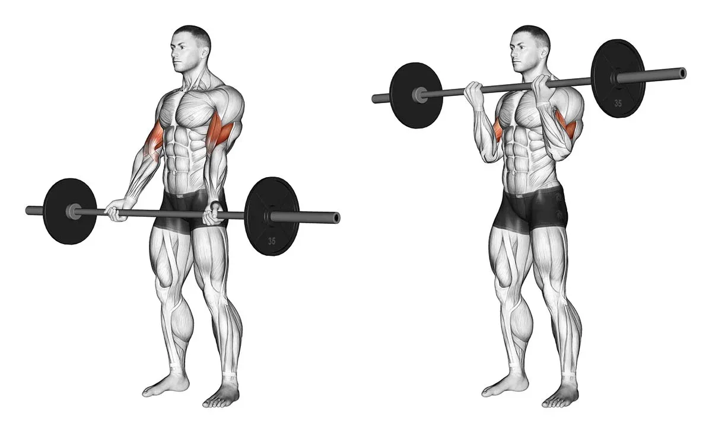

Puxada Frontal
Na puxada frontal, também conhecida como pulley frente, o exercício é feito sentado de frente para a máquina. Em seguida, deve-se segurar no puxador e trazer a barra em direção ao peito. Para que o movimento seja feito corretamente, o tronco deve ficar parado e o abdômen contraído durante toda a execução do exercício.
Remada Baixa
A remada baixa é feita na máquina na posição sentada e ajuda a fortalece principalmente os músculos das escápulas na parte superior das costas, além dos bíceps e dos cotovelos.
Barra Fixa
A barra fixa é um ótimo exercício para costas e bíceps, podendo ser feito com a pegada mais aberta ou fechada. Para fazer esse exercício, deve-se se posicionar na barra e, mantendo o abdômen contraído, e ativando os músculos das costas e dos braços, fazer força para subir. Inicialmente, pode-se precisar de auxílio de outra pessoa para se posicionar na barra e/ ou para realizar mais repetições.
Supino Reto
Deite no banco, apoie bem as costas.
Os pés podem estar no chão ou no próprio banco.
Posicione as mãos e retire a barra do suporte.
Faça uma flexão do cotovelo e desça a barra devagar até próximo ao tórax (não deixe a barra encostar no peito).
Faça a extensão do cotovelo e retorne à posição inicial.
Repita o movimento até completar sua série.
Supino Inclinado

Deite no banco inclinado e apoie bem as costas.
Os pés devem estar apoiados no chão ou no suporte do banco se houver.
Segure os halteres com os braços estendidos.
Faça uma flexão do cotovelo e desça os halteres devagar até formar um ângulo de aproximadamente 90º graus.
Faça a extensão do cotovelo e retorne à posição inicial.
Repita o movimento até completar sua série.
Crucifixo Inclinado
Deite no banco inclinado e apoie bem as costas.
Os pés devem estar apoiados no chão ou no suporte do banco se houver.
Segure os halteres com os braços estendidos e palmas das mãos viradas para si.
Faça uma abdução do ombro e desça os halteres devagar até aproximadamente a linha do ombro
Faça a adução do ombro e retorne à posição inicial.
Repita o movimento até completar sua série.
Elevação Lateral

A elevação lateral pode ser feita de modo a trabalhar os dois ombros ao mesmo tempo ou um por vez. Para isso, deve-se segurar o halter com a palma da mão voltada para baixo e levantar lateralmente o halter até a altura dos ombros. De acordo com o objetivo do treino, pode-se flexionar um pouco o cotovelo ou elevar o halter um pouco para frente.
Esse tipo de exercício dá mais ênfase ao trabalho do deltoide medial e posterior, ou seja, da porção do meio e de trás do músculo que recobre o ombro, o deltoide.
Desenvolvimento
O desenvolvimento de ombro pode ser feito em casa, em pé ou sentado, com halteres, ou ainda na academia com o uso da barra com pesos.
O movimento deve ser realizado segurando os halteres, ou a barra, com a palma da mão voltada para frente e na altura em que o braço e o antebraço formem um ângulo de 90º. Em seguida, deve-se levantar o braço até que os cotovelos fiquem estendidos e repetir o movimento de acordo com o treino estabelecido.
Crucifixo Inverso
O crucifixo inverso pode ser feito em casa, em pé ou sentado em um banco ou cadeira, por exemplo.
Para fazer o crucifixo invertido em pé, deve-se afastar os pés na largura dos ombros. Os braços devem estar ao longo do corpo e um halter em cada mão.
Com o abdômen contraído e as costas retas, inclinar o tronco para frente. Levantar os braços para os lados sem flexionar os cotovelos e com as palmas das mãos voltadas para baixo, até que fiquem no nível dos ombros. Abaixar os braços lentamente, voltando à posição inicial. É importante inspirar quando os braços estão para baixo e expirar quando levantar os braços.
Agachamento
O agachamento é considerado um movimento completo, isso porque além de trabalhar a coxa, trabalha também a parte posterior da perna, glúteos e panturrilha, sendo, então considerado um ótimo exercício para fortalecer as pernas.
Com o auxílio de uma cadeira ou sofá, fique em pé, com as costas retas e apoie um dos pés. Flexione a perna contrária, descendo o máximo que puder e depois levante. Troque de perna e continue o exercício de forma alternada.
Flexora Deitada
Nesse exercício para posterior de coxa, a pessoa deve deitar na mesa flexora, que deve estar regulada de acordo com a altura e tamanho das pernas, encaixar o quadril na curva do equipamento e os pés no apoio, e em seguida flexionar as pernas até mais ou menos 90º e voltar para a posição inicial mais lentamente.
É importante nesse exercício que a máquina esteja devidamente regulada, bem como o peso com que o exercício vai ser realizado, pois assim é possível evitar lesões e sobrecarga para a região lombar.
Stiff
O stiff é um ótimo exercício para posterior de perna, pois trabalha todos os músculos da parte posterior, incluindo os glúteos. Esse exercício pode ser feito utilizando uma barra ou halteres e, para isso, deve segurar a carga na frente do corpo, mais ou menos na altura do quadril, e depois descê-la em direção aos pés lentamente, tendo atenção às costas que devem ser mantidas alinhadas para evitar compensação.
Alongamento TFL
O tensor da fáscia lata (TFL) é o músculo localizado na região do quadril, na lateral da coxa. Seu alongamento pode ser feito tanto em pé quanto sentado. Em pé, cruze a perna esquerda sobre a direita e incline o corpo para o lado esquerdo. Fique na posição por alguns segundos e depois repita do outro lado.
Para realizar o alongamento sentado, sente-se com as pernas cruzadas e as costas retas. Em seguida, posicione a perna direita de forma que o joelho fique flexionado, apontando para o teto, e o pé apoiado no chão. Mantenha a outra perna apoiada no chão. Gire o tronco para a direita, sentindo a lateral da coxa alongar. Fique na posição por alguns segundos e depois repita do outro lado.
Alongamento Lombar
Para alongar a lombar, um ótimo movimento é a “postura da criança”, bastante comum no yoga. Para realizá-la, basta sentar-se sobre as pernas dobradas, de modo que os joelhos e o peito do pé fiquem encostados no chão. Em seguida, incline o tronco para a frente, esticando totalmente os braços e abaixando a cabeça. Fique na pose por alguns segundos e depois retorne à posição inicial subindo o tronco lentamente.
Mobilidade
Para realizar o exercício de mobilidade de tornozelo, ajoelhe-se sobre um colchonete. Flexione uma das pernas de modo que o joelho fique em um ângulo de 90º com o pé todo apoiado no chão. Aos poucos, incline o corpo para a frente e para trás pelo número de vezes determinado no seu treino. Depois, repita o exercício com a outra perna.
Rosca Direta

O exercício “rosca direta” é outra boa opção para os bíceps, pois trabalha força, resistência, além de estimular o aumento da massa e do volume muscular. Para alcançar esses objetivos, deve-se usar pesos como halteres, barra ou garrafa pet com areia dentro, por exemplo.
Como fazer: de pé, com os pés afastados na largura dos ombros, joelhos um pouco flexionados e com o abdômen contraído, colocar o peso em cada mão ou segurar a barra com os cotovelos flexionados à frente do corpo e as mãos viradas para cima. Sem movimentar os ombros e com os punhos firmes, elevar os braços no sentido dos ombros e voltar à posição inicial lentamente. Inspirar quando os braços estiverem na posição inicial e expirar quando flexionar os cotovelos. Pode-se fazer de 3 a 4 séries de 8 a 12 repetições cada, com 60 a 90 segundos de descanso entre as séries.
Rosca Martelo
O exercício “rosca martelo” é bastante eficaz para aumentar o volume dos bíceps e do músculo braquial, mas deve ser feita com o uso de peso ou halteres.
Caso não se tenha este tipo de material, pode-se colocar um ou mais pacotes de 1kg de arroz ou de feijão dentro de duas mochilas ou bolsas do mercado, ou então usar garrafas pet com areia dentro, por exemplo.
Como fazer: de pé, segurar um peso em cada mão com a palma da mão voltada para dentro, com os braços para baixo alinhados ao corpo. Flexionar os cotovelos, elevando os antebraços até que os pesos se encontrem na altura do ombro. Voltar os braços para a posição inicial lentamente. Pode-se fazer de 3 a 4 séries de 8 a 12 repetições cada, com 60 a 90 segundos de descanso entre as séries. Uma variação desse exercício é levantar os braços um de cada vez de forma alternada.
Rosca Scott
Este é considerado outro clássico exercício para os bíceps, também ativando o bíceps braquial. Ele permite isolar mais a musculatura-alvo devido à estabilização de cotovelos. A rosca scott é realizada na posição sentada, com os cotovelos apoiados em um suporte apropriado, podendo ser feita com barra, halteres ou na polia.